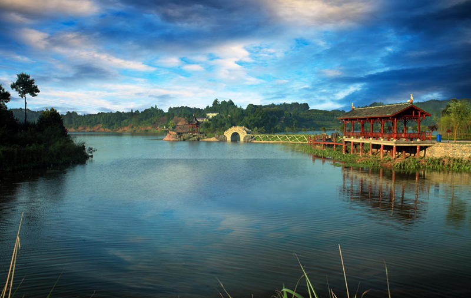
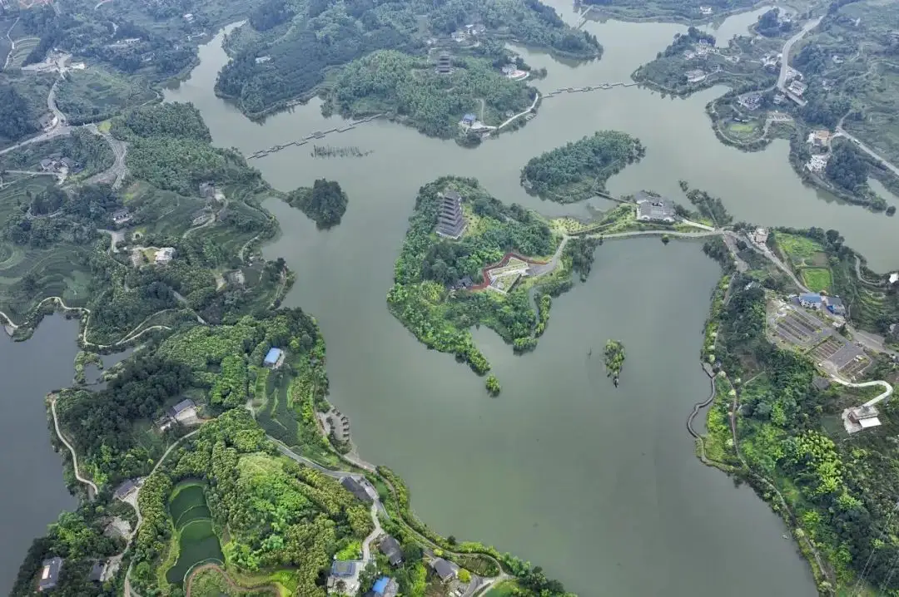

位置 青山湖国家湿地公园位于重庆市万盛经开区北部金桥镇境内，距重庆主城约110公里，距万盛主城约8公里，是丘区湖泊乡村型湿地旅游目的地，同时也是专题教育和素质拓展中小学社会实践基地。方圆百里，原叫张三塘水库，为人造湖，未修水库前，这里是一条小溪流，名叫养生河。库区宽阔的水域，像一面大镜子，静静地平铺在两山之间，泛着粼粼波光。青山倒影映在水里，显出清晰的轮廓，像一幅巨大的水墨画。
 地理环境：景区内自然景观、自然环境辉映，呈现出梨园春色、青山晚照、秋月闻桂、养身飞瀑、晴雨烟村等优美景观。公园内人文气息浓厚，拥有充满传统工匠文化特色的七匠古艺、原乡生活的尚古农耕。景区内还拥有国家级非物质文化遗产——金桥吹打，爱国主义教育基地——子如陵园，还有汉崖墓群等特色旅游点
.jpg)
.jpg)
.jpg)
梨园春色 梨园春色距青山湖国家湿地公园约1公里左右，面积约15000余亩。自1993年开始栽植以来，已形成了以黄花梨为主，桃花、樱花、杨梅等其他种类相交辉映。每年3-4月，这里都将举行梨花文化旅游节，登上梨园瞭望观光塔，漫步休闲廊庭，远远望去，满园梨花竞相开放，相互掩映，连绵不绝，似雪压林，美不胜收。若逢微雨季节，颇有“梨花细雨”的情致。 尚古村落 尚古村落位于青山湖国家湿地公园西侧约1公里处，景区占地约500亩。尚古村落内可以宿民宿、观孔雀、赏花海、体验滑草等。尚古村落腹地花海占地近100亩，主要栽植柳叶马鞭草，花期贯穿春夏秋三季，花海与周围景观树形成了花开四季，秀色怡人的壮美景观。漫步石板铺的小道，散落各处的鹅卵石，石桌、竹子，有树有石凳，回归自然、感受自我。 晴雨烟村 青山湖周边村落众多、错落有致，这些村落、民居多保留着古朴的风格。倒映水中，与湖光山色融为一体，若是雨后初晴，薄雾笼罩整个青山、村落，加之炊烟袅袅，远远望去，形成了烟雾蒙蒙的原乡意境，动静相交，宛若画师尚未停下的笔墨，俨然一幅田园丹青图。梦栖碧潭梦为家国梦，情为故土情。生于十九世纪七十年代的刘子如先生一生颠沛流离，经历战火，晚年回到家乡，倾尽财力心力，兴办教育，励志改变家乡面貌，将一腔热血，洒在脚下的这片土地上。落叶归根，无尽的家国情怀化为这一汪清澈的碧潭，静静栖居于此。沿湖走过，想象当年的峥嵘岁月，感悟家国情怀，追忆浓浓乡愁。 梦栖碧潭位于青山湖水库库尾处，碧潭南面为柳烟荷塘，游人可步行，也可乘乌篷船进入潭中赏荷观景 秋月闻桂 青山湖畔有一片葱茏的桂花林，登山步道穿梭其间，金秋时节，云淡风清，徜徉桂花林，花香扑鼻。傍晚时分，明月东升，信步登楼，与亲朋好友品茗赏月，有“畔何人初见月，江月何年初照人”之感，正是“望平湖、闻桂香、观秋月、忆乡愁”的绝佳胜地，此处因此得名“秋月闻桂”